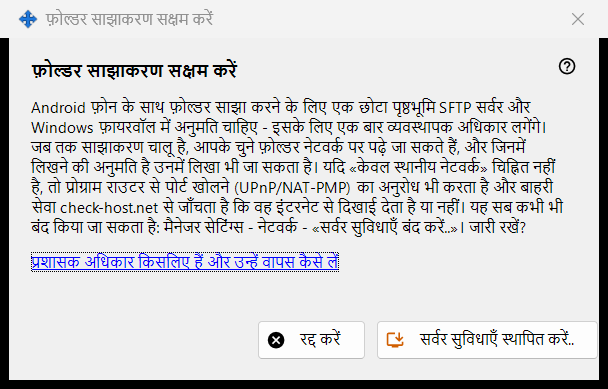
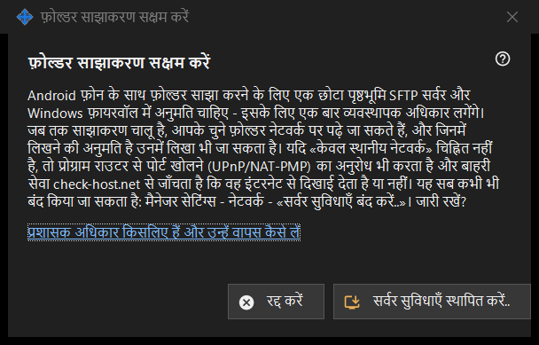

फ़ोल्डर साझाकरण सक्षम करें
यह किस लिए है
साझाकरण के सर्वर वाले हिस्से को स्थापित करने की अनुमति माँगती है: पृष्ठभूमि में चलने वाला एक छोटा SFTP सर्वर और Windows फ़ायरवॉल का एक अपवाद। यह मुख्य विंडो के सर्वर सुविधाएँ सक्षम करें.. बटन से और विज़ार्ड से खुलती है, और व्यवस्थापक अधिकार एक बार माँगती है।


इस क्रम में
- स्पष्टीकरण पढ़ें।
- सर्वर सुविधाएँ स्थापित करें.. बटन दबाएँ।
- Windows के व्यवस्थापक अनुरोध की पुष्टि करें।
- नतीजे की पंक्ति का इंतज़ार करें; सफल होने पर विंडो बताती है कि फ़ोल्डर साझाकरण सक्षम है।
- बिना बदलाव निकलने के लिए रद्द करें दबाएँ।
तत्व
यह क्या करता है
Android फ़ोन के साथ फ़ोल्डर साझा करने के लिए पृष्ठभूमि में चलने वाला छोटा SFTP सर्वर और Windows फ़ायरवॉल की अनुमति चाहिए। साझाकरण चालू रहने पर चुने हुए फ़ोल्डर नेटवर्क पर पढ़े जा सकते हैं, और जो लिखने के लिए खोले गए हैं उनमें लिखा भी जा सकता है। यदि केवल स्थानीय नेटवर्क वाला विकल्प चुना नहीं है, तो प्रोग्राम राउटर से एक पोर्ट खोलने को भी कहता है (UPnP/NAT-PMP) और पते की जाँच एक बाहरी सेवा से करता है।
नतीजे
हो गया। फ़ोल्डर साझाकरण सक्षम है।; अनुरोध अस्वीकार करने पर साझाकरण सक्षम नहीं - व्यवस्थापक अधिकार नहीं मिले। (कुछ नहीं बदलता और आप फिर कोशिश कर सकते हैं); या फ़ायरवॉल की विफलता, जिसमें दोबारा कोशिश करने और ट्रे आइकन के मेन्यू से लॉग भेजने को कहा जाता है।
व्यवस्थापक अधिकार और उन्हें वापस कैसे लें
लिंक समझाता है कि अधिकार किस काम में आते हैं। इसे पलटने के लिए प्रबंधक की सेटिंग्स में सर्वर सुविधाएँ बंद करें.. इस्तेमाल करें: साझाकरण रुक जाता है, जुड़े हुए फ़ोन कट जाते हैं और फ़ायरवॉल की अनुमति हटा दी जाती है। फ़ोल्डरों की सूची और पासवर्ड बने रहते हैं, और सब कुछ फिर से चालू किया जा सकता है।
प्रबंधक सेटिंग · SFTP साझाकरण सेटिंग · एक्सचेंज सर्वर सेटिंग